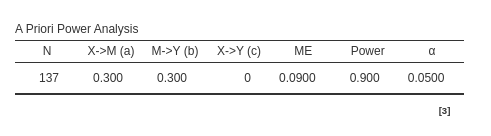
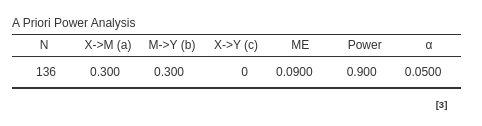

Mediation
0.4.0
Mediation power analysis allows for computing power
parameters for testing indirect (mediated) effects in several
mediational models. It can be used to estimate power parameters based on
the Sobel test, joint significance or
Monte Carlo method.
The initial step is to determine the objective of the analysis (
aim ). Further details regarding different objectives can be
found in the Info results field.
The second step is to decide what type of model we are dealing with.
Models
Simple mediation (3 variables) : This is the classical simple mediation, with one independent variable, one mediator. The model looks like this
Complex (multiple mediators) : Allows computation of power parameters for more complex models: two parallel mediator, three parallel mediator and serial mediation with two mediators. They are, respectively:
Simple Mediation Model
In simple mediation models there is one independent variable, one mediator and one dependent variable. The model is:
The a coefficient is the simple standardized coefficient
of a regression from X to M (mediator). b and
c' are the standardized coefficients of a multiple
regression with \(Y\) as dependent
variable and \(X\) and \(M\) as independent variables. The mediated
effect \(ME=a*b\) is given by the
product of the coefficients along the mediator pathway.
As for any PAMLj command, we can
always obtain some help in setting the analysis by clicking on the
plus icon in the Info bar.

Thus, we now declare what are the expected standardized coefficients of the model.
The power Parameters are the usual parameters of power analysis.
Minimum desired power is the power level (\(1-beta\)) the user set as the expected power. Not available when the aim of the analysis is
power.N (Sample size is the whole sample size N the user expected to have. Not available when the aim of the analysis is
N.(type I error rate) is the significance level the user intend to use, usually referred to as \(\alpha\).
Main results
As soon as the coefficients are set, the path diagram is updated and
we obtain the results in the A Priori Power Analysis
table.

The table recaps the input parameters plus the estimated parameter we
asked in the Compute option. In this
example, we asked for N, so the module estimated \(N=223\) as the required sample size to
obtain a power of .90 or more, given \(a=.3\), \(b=.3\) and \(c'=0\). An additional textual
description of the results can be obtained by selecting Exploratory text under the
Options label.
Tests
Joint significance
By default, PAMLj assumes that the joint significance method (Yzerbyt et al. 2018) will be used to test the mediated effect. This method determines the significance of the mediated effect by testing whether both paths \(a\) and \(b\) are significant: if both are significant, the mediated effect is considered significant. Additionally, this method produces results very similar to the Monte Carlo method (Yzerbyt et al. 2018), while being much faster in terms of computation.
In our example, by choosing joint significance, we obtain a required sample size of \(N=137\).
Sobel test
Alternatively, users can opt for the Sobel test (Sobel
1982) to evaluate the significance of the mediated effect.
The Sobel test is commonly used for mediation analysis due to its
computational efficiency, as it is based on the z-test. However, it is
important to note that while the Sobel test is fast, it is known to
introduce some bias and may not always be the most reliable method for
testing mediated effects. In our example, we obtain an N=223, which is
larger than the required N obtained with the
joint significance test, testifying the lower power of the
Sobel test (MacKinnon et al.
2002).
Monte Carlo
The third method is the Monte Carlo method. This approach is based on simulations (MacKinnon, Lockwood, and Williams 2004). It generates a distribution of parameters with the appropriate standard error and evaluates their joint probability of being significant at the error rate provided in the input. This simulation process is repeated \(R\) times, and the probability of obtaining a significant result is calculated from the R simulations. If one intends to assess significance using a bootstrap method (Preacher and Hayes 2008), the Monte Carlo method is an accurate approximation of power parameters (Zhang 2014).
For the Monte Carlo method, the number of simulations can be set in the | Options panel. When the number of simulations exceeds 1000, it is recommended to enable Parallel computation to speed up the process. However, users should be aware that in certain operating systems (such as Windows), parallel computation might not function properly.
The Monte Carlo (MC) and joint significance methods yield nearly identical required sample sizes (N) in our example. While MC results may slightly vary between runs, this variability decreases as the number of simulations (R) increases, improving estimate precision. Typically, both methods produce very similar results.

Sensitivity Analysis
Sensitivity analysis, exploring different plots of possible combinations of parameters, can be carried out like for any other PAMLj sub-modules. Please visit Sensitivity analysis page for more details.
Return to main help pages
Main page
Comments?
Got comments, issues or spotted a bug? Please open an issue on PAMLj at github or send me an email